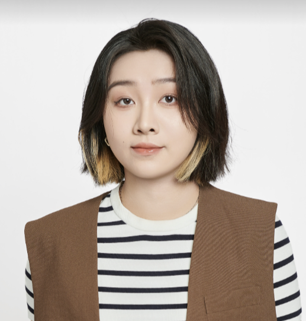
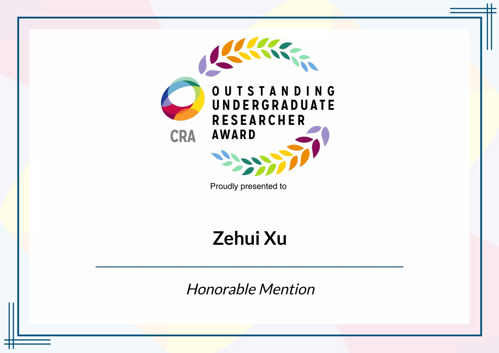
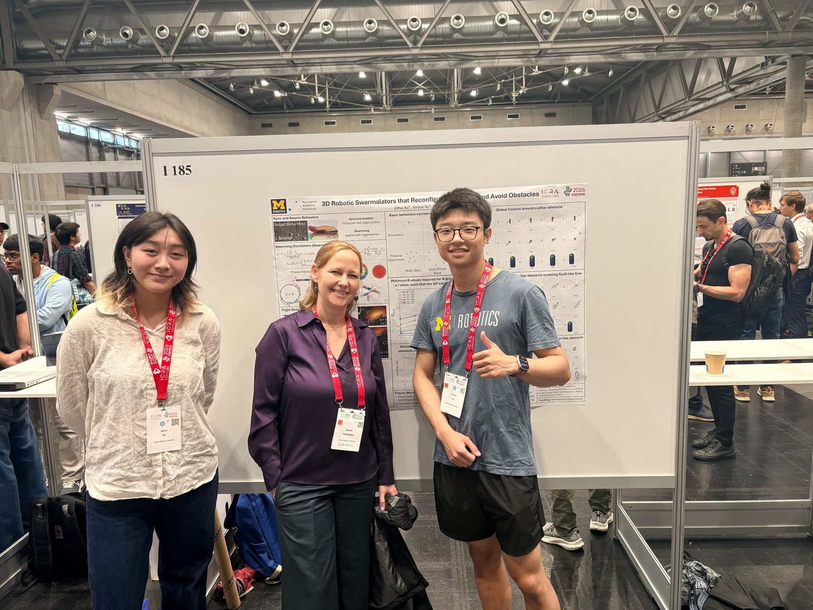
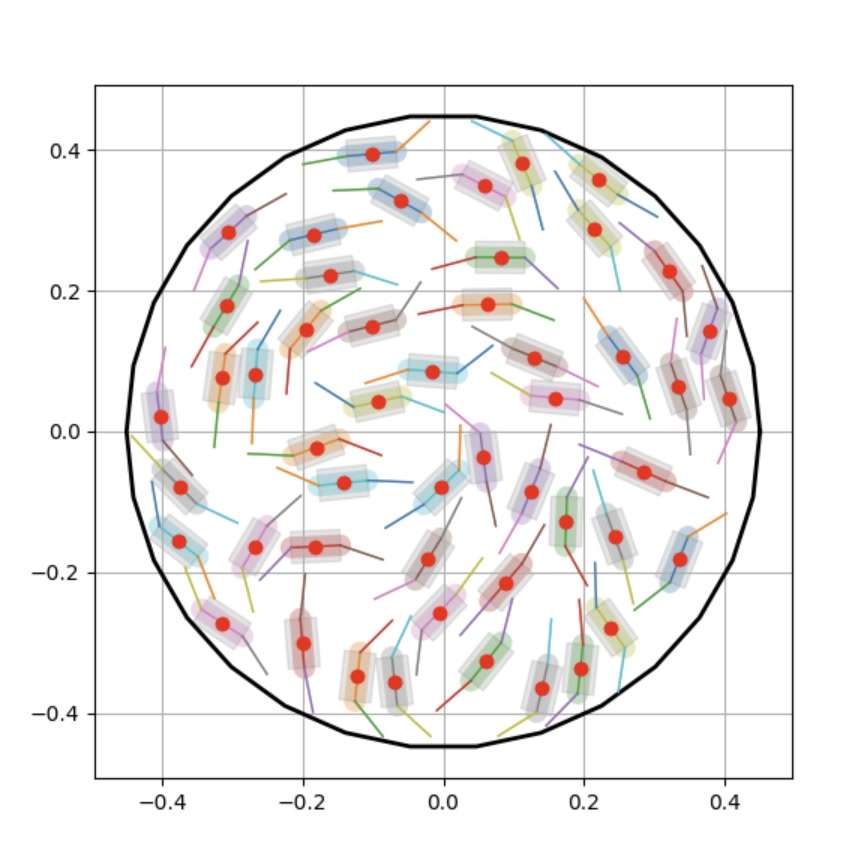
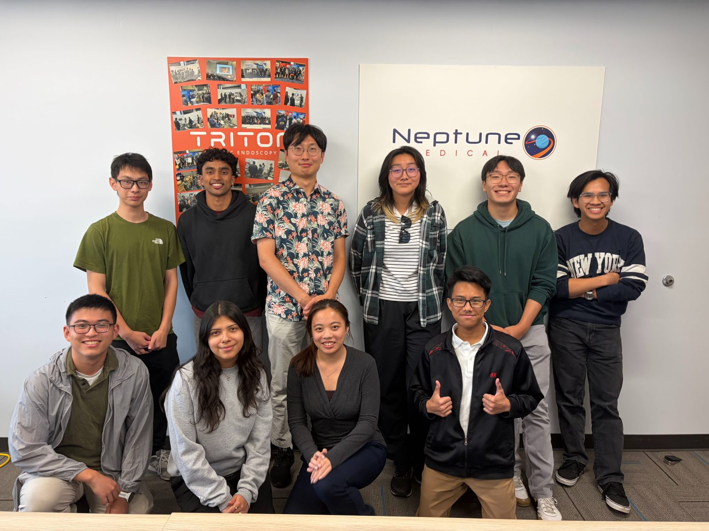

Sunny (Zehui) Xu
I'm a senior in Robotics and Computer Science at the University of Michigan, interested in robotics autonomy and in building systems that let robots move safely through the world around them.
I enjoy research and development across the full robotics stack, from deploying software to testing it in simulation and on hardware. I take pride in owning projects: taking an abstract idea, turning it into something tangible, and iterating on it by talking with the people who will actually use it.

Research
Synergetic Adaptive Machines Lab, University of Michigan · June 2025 – present

Co-first author
3D Robotic Swarmalators that Reconfigure, Navigate, and Avoid Obstacles
Read the paper ICRA 2026 program listing
- Co-first authored and presented an accepted ICRA 2026 paper, earning Honorable Mention in the CRA Outstanding Undergraduate Researcher Award
- Delivered the real-world implementation of the 3D swarmalator model with Control Barrier Functions (CBF), demonstrating robust, safe and scalable distributed control for autonomous drones in obstacle-rich environments
- Developed real-time control software by interfacing with the Crazyflie API and established ROS network communication with a VICON motion capture system for closed-loop feedback across 9 drones

Submitting December 2026
Smarticle Collision Simulation
- Built an NVIDIA Isaac Sim framework to simulate and observe the stochastic formation of smarticle collisions, enabling scaled-up physical experiment observations with 100+ robots
NVIDIA Isaac Sim

Particle Life Simulation
- Optimizing simulation runtime to scale to 100k+ particles, the population size needed for organic collective behaviors to emerge
- Improving the runtime of the algorithm that uses interaction matrices to control different particle species from O(n²) to O(n), allowing much larger particle counts
Tools go here
Work Experience
May – August 2026
- Improved an internal fault audit system using clinical feedback to catch faults and display them in a readable format, reducing clinical documentation time for faulty software runs from 1 hour to 10 minutes
- Designed a debugging tool for an FDA-regulated endoscopy robot that processes logs and informs R&D researchers of performance degradation and failures hidden within unviewed logs
- Created data pipelines and architecture to detect short- and long-term failures of medical devices in preparation for production scale, allowing the company to monitor robots across multiple locations
- Presented the debugging tool at a company-wide meeting, generating strong interest from R&D and leadership and validating its potential for field deployment
Pythonlog analysisdata pipelinesFDA-regulated systems

January 2026 – present
- Built a PyTorch-based energy prediction model using real-world vehicle and environmental data
- Developed an energy-aware fleet routing optimizer integrating learned energy predictions with the Google Maps API to generate efficient routes for electric Isuzu truck fleets
- Benchmarked energy-optimized routing policies against baseline heuristics in simulation to evaluate energy efficiency and route quality
PyTorchPythonGoogle Maps APIroute optimization
Building
January 2026 – present
- Created and validated an iterative landmark matching model in Gazebo simulation, facilitating robust humanoid pose estimation under noisy soccer-field observations
- Led a redesign of the A* algorithm with a custom-built ROS2 interface, coordinating simulation-based validation and automated Bash testing to achieve a 50% efficiency improvement over BFS
- Designed a ROS2 PCD publisher for simulating continuous lane-line data in point-cloud form for CV integration
ROS2GazeboC++pose estimationpath planning
September – December 2024
- Integrated SLAM for autonomous navigation using LCM and Raspberry Pi, enabling real-time mapping and pathfinding
- Constructed a particle filter and lidar sensor to map out the robot's environment, allowing it to explore using PID control, odometry, and an occupancy grid for accurate positioning
- Tuned and analyzed reprojection errors across two camera models offered by MATLAB and LCM
C++LCMRaspberry Piparticle filterMATLAB
Toolkit
Languages
C++, C, Python, Java, JavaScript, MATLAB
Robotics
ROS2, NVIDIA Isaac Sim, Gazebo, OpenCV, LCM, Crazyflie, VICON motion capture
Learning and data
PyTorch, SQL, Docker
Hardware and design
Onshape, SOLIDWORKS, EasyEDA
Coursework
Data Structures and Algorithms, SLAM and Navigation, Operating Systems, Sensors and Signals
Also
Teaching assistant for Deep Learning for Robot Perception. Tau Beta Pi.